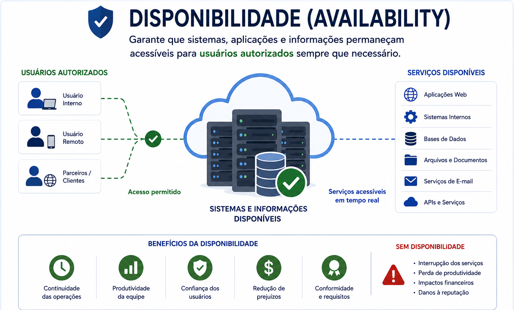
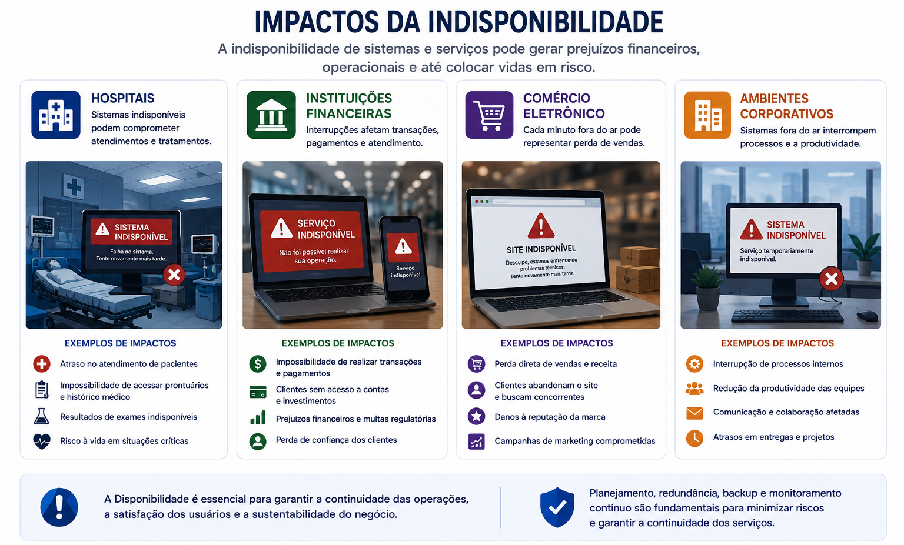
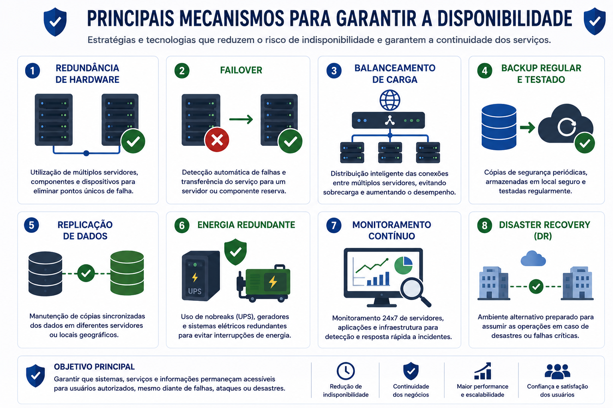
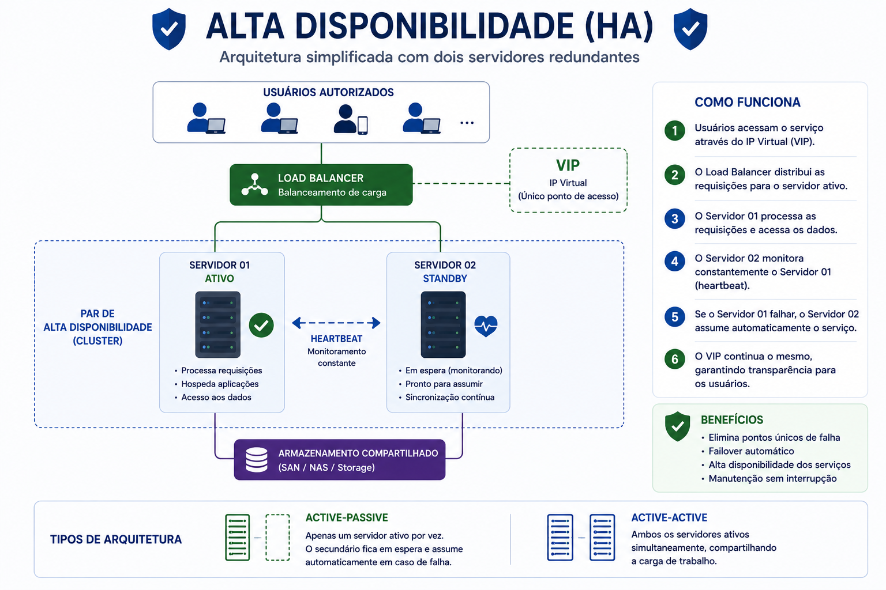
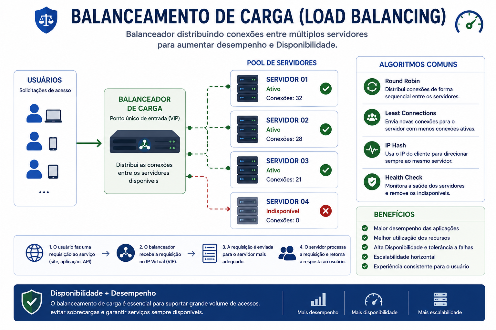
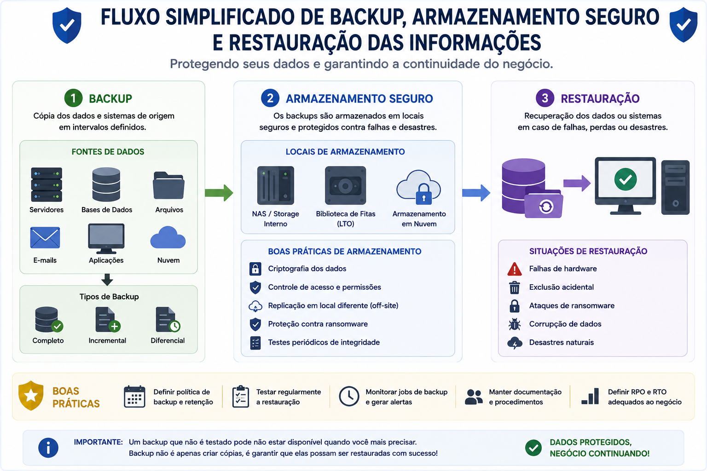
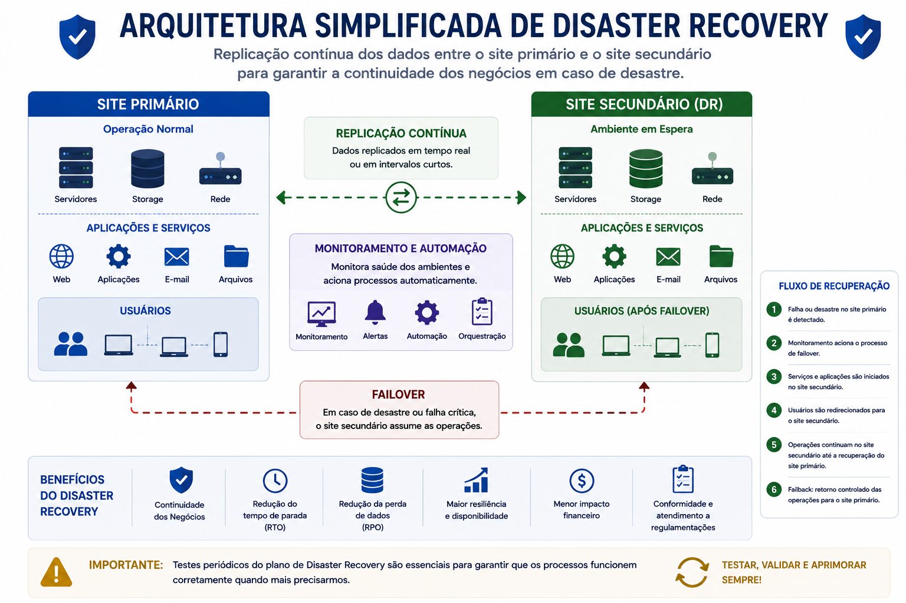
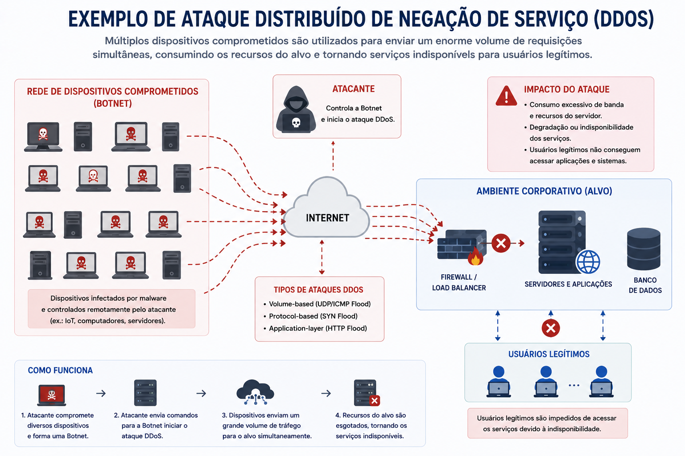
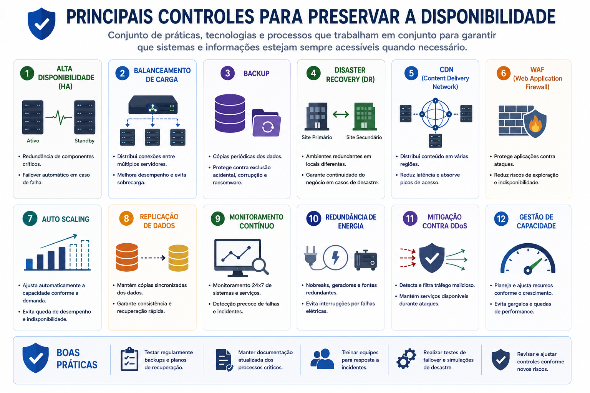

📋 Guia Rápido
📖 Resumo Executivo
Imagine um hospital durante um atendimento de emergência.
Todas as informações dos pacientes estão protegidas por mecanismos de autenticação e criptografia. Os registros médicos permanecem corretos, completos e íntegros.
Entretanto, devido a uma falha elétrica, o sistema torna-se indisponível por alguns minutos. Os profissionais de saúde deixam de acessar prontuários, resultados de exames e prescrições médicas justamente no momento em que essas informações são mais necessárias.
Esse cenário demonstra que proteger a Confidencialidade e a Integridade não é suficiente. Também é indispensável garantir que os sistemas e as informações estejam disponíveis sempre que forem necessários.
Um sistema seguro é aquele que protege os dados e, ao mesmo tempo, permanece disponível para seus usuários.
Esse é exatamente o propósito do terceiro pilar da Tríade CIA: a Disponibilidade.
Apresentar os principais mecanismos utilizados para manter serviços, aplicações e informações acessíveis mesmo diante de falhas de hardware, ataques cibernéticos, erros humanos ou desastres naturais.
⚡ O que é Disponibilidade?
Disponibilidade é o princípio da Segurança da Informação que garante que sistemas, aplicações e dados possam ser acessados por usuários autorizados sempre que necessário.
Em outras palavras, além de proteger as informações contra acessos indevidos e alterações não autorizadas, uma organização precisa assegurar que seus recursos permaneçam operacionais e funcionando continuamente.
Sempre que um sistema deixa de responder, um servidor fica fora do ar ou uma aplicação torna-se inacessível, ocorre uma perda de Disponibilidade.

Disponibilidade não significa apenas manter servidores ligados. Ela envolve garantir continuidade operacional, desempenho, confiabilidade e capacidade de recuperação diante de falhas ou incidentes.
🏢 Por que a Disponibilidade é importante?
Atualmente, praticamente todas as organizações dependem de serviços digitais para realizar suas atividades. Uma interrupção, mesmo que de poucos minutos, pode gerar impactos financeiros, operacionais, jurídicos e até colocar vidas em risco.
A importância da Disponibilidade varia conforme o contexto, mas em todos os casos ela está diretamente relacionada à continuidade das operações da organização.

🛡 Como Garantir a Disponibilidade
Garantir a Disponibilidade significa implementar controles que reduzam a probabilidade de interrupções e permitam que os serviços sejam rapidamente restaurados caso alguma falha ocorra.
Em ambientes corporativos modernos, diversos mecanismos atuam em conjunto para assegurar a continuidade operacional da infraestrutura de TI.
Enquanto alguns controles evitam a indisponibilidade, outros permitem recuperar rapidamente sistemas e informações após incidentes ou desastres.

🖥 Alta Disponibilidade (High Availability)
Alta Disponibilidade, frequentemente representada pela sigla HA (High Availability), é uma arquitetura projetada para minimizar interrupções dos serviços.
Seu principal objetivo é garantir que, caso um servidor apresente falha, outro assuma automaticamente suas funções, reduzindo ao máximo o tempo de indisponibilidade.
Dependendo da arquitetura adotada, essa transição pode ocorrer em poucos segundos ou até de forma praticamente imperceptível para os usuários.

No modelo Active-Passive, apenas um servidor atende às requisições enquanto outro permanece em espera. Caso ocorra uma falha, o servidor secundário assume automaticamente as operações.
No modelo Active-Active, dois ou mais servidores permanecem ativos simultaneamente, compartilhando a carga de trabalho e oferecendo maior desempenho e disponibilidade.
⚖ Balanceamento de Carga (Load Balancing)
Mesmo que existam vários servidores disponíveis, é necessário distribuir as conexões de maneira inteligente para evitar que alguns equipamentos fiquem sobrecarregados enquanto outros permaneçam ociosos.
Essa função é realizada pelo Balanceador de Carga (Load Balancer), responsável por distribuir as requisições entre os servidores disponíveis.
Além de melhorar o desempenho da aplicação, o balanceamento contribui diretamente para aumentar a Disponibilidade do serviço.

- Maior disponibilidade dos serviços.
- Melhor desempenho das aplicações.
- Redução de sobrecarga nos servidores.
- Maior tolerância a falhas.
- Escalabilidade horizontal.
💾 Backup e Recuperação de Dados
Mesmo adotando arquiteturas redundantes e mecanismos de Alta Disponibilidade, nenhuma infraestrutura está completamente livre de falhas. Problemas de hardware, erros humanos, ataques cibernéticos e desastres naturais podem comprometer sistemas e informações críticas.
Nesse cenário, o Backup torna-se um dos controles mais importantes para garantir a continuidade das operações. Seu objetivo é manter cópias atualizadas das informações para que possam ser restauradas sempre que necessário.
Entretanto, realizar backups não é suficiente. Também é essencial garantir que essas cópias possam ser restauradas com sucesso quando ocorrer um incidente.

Backups devem ser testados periodicamente. Uma cópia que nunca foi validada pode não ser útil durante uma situação real de desastre.
⏱ RPO e RTO
Durante o planejamento da continuidade dos negócios, duas métricas são fundamentais para definir os objetivos de recuperação dos serviços: RPO e RTO.
Recovery Point Objective Define a quantidade máxima de dados que a organização aceita perder entre o último backup válido e a ocorrência do incidente.
Recovery Time Objective Representa o tempo máximo aceitável para restaurar um serviço após uma interrupção.
Quanto menores forem os valores de RPO e RTO, maior tende a ser o investimento necessário em infraestrutura, redundância e soluções de recuperação.
Uma instituição financeira pode estabelecer um RPO de 5 minutos e um RTO de 15 minutos, exigindo mecanismos avançados de replicação e recuperação para atender esses requisitos.
🌎 Disaster Recovery (DR)
Mesmo utilizando mecanismos de Alta Disponibilidade, existe a possibilidade de um desastre comprometer completamente um Data Center. Incêndios, enchentes, falhas elétricas de grande escala e ataques cibernéticos podem tornar toda a infraestrutura indisponível.
Para reduzir esse risco, muitas organizações implementam um Plano de Recuperação de Desastres (Disaster Recovery), mantendo uma infraestrutura alternativa capaz de assumir as operações caso o ambiente principal deixe de funcionar.

Dependendo da criticidade do negócio, o ambiente secundário pode permanecer totalmente operacional ou ser ativado apenas durante situações de emergência.
Disponibilidade não depende apenas da tecnologia. Pessoas, processos, infraestrutura física, planos de contingência e procedimentos de recuperação também fazem parte da estratégia de Continuidade de Negócios (Business Continuity), cujo objetivo é reduzir impactos e manter a organização operando mesmo diante de incidentes graves.
🌐 Ataques que Comprometem a Disponibilidade
Assim como a Confidencialidade e a Integridade podem ser comprometidas por ataques cibernéticos, a Disponibilidade também é constantemente alvo de ameaças. O objetivo desses ataques normalmente não é roubar informações, mas impedir que usuários legítimos consigam utilizar sistemas, aplicações e serviços essenciais.
Dependendo da criticidade da organização, alguns minutos de indisponibilidade podem resultar em grandes prejuízos financeiros, perda de credibilidade, interrupção da produção e descumprimento de requisitos legais.

🛡 Controles que Preservam a Disponibilidade
Nenhum mecanismo isolado é capaz de garantir a Disponibilidade de uma infraestrutura. Organizações utilizam diversos controles trabalhando em conjunto para reduzir riscos e assegurar a continuidade operacional.

Entre os controles mais utilizados destacam-se Alta Disponibilidade, Load Balancing, Backup, Disaster Recovery, CDN, WAF, Auto Scaling, replicação de dados, monitoramento contínuo, redundância de energia e mecanismos de mitigação contra ataques DDoS.
- Implementar arquiteturas de Alta Disponibilidade.
- Realizar backups periódicos e validar sua restauração.
- Monitorar continuamente servidores e aplicações.
- Utilizar balanceadores de carga para distribuir conexões.
- Manter ambientes redundantes para serviços críticos.
- Documentar e testar o Plano de Recuperação de Desastres.
- Empregar proteção contra ataques DDoS.
- Monitorar consumo de recursos e capacidade da infraestrutura.
- Confiar apenas em backups sem realizar testes de restauração.
- Manter um único servidor para aplicações críticas.
- Ignorar alertas de monitoramento.
- Não documentar procedimentos de recuperação.
- Subdimensionar recursos da infraestrutura.
- Não possuir redundância de energia ou conectividade.
📚 O que aprendemos?
- O conceito de Disponibilidade.
- Os impactos da indisponibilidade.
- Os mecanismos utilizados para garantir continuidade operacional.
- Os conceitos de Alta Disponibilidade e Failover.
- O funcionamento do Balanceamento de Carga.
- Os diferentes tipos de Backup.
- Os conceitos de RPO e RTO.
- A importância do Disaster Recovery.
- As principais ameaças à Disponibilidade.
- Os controles utilizados para manter sistemas e serviços acessíveis.
🏁 Conclusão da Tríade CIA
Ao longo dos três primeiros capítulos desta série conhecemos os pilares fundamentais da Segurança da Informação: Confidencialidade, Integridade e Disponibilidade.
Esses princípios orientam a implementação de políticas, controles e tecnologias utilizados para proteger informações e garantir a continuidade das operações nas organizações modernas.
A partir do próximo capítulo deixaremos de estudar os princípios e passaremos a explorar os mecanismos técnicos utilizados para implementá-los na prática.
🚀 Próximo Capítulo
Agora que conhecemos completamente a Tríade CIA, iniciaremos o estudo de um dos mecanismos mais importantes da Segurança da Informação: Criptografia.
Entenderemos como algoritmos criptográficos protegem informações em repouso e em trânsito, quais são os principais tipos de criptografia utilizados na atualidade e como esse mecanismo contribui diretamente para preservar a Confidencialidade, a Integridade e, em alguns cenários, a Disponibilidade.
➡ Ler o próximo capítulo
✅ 🔺 Tríade CIA
✅ 🔒 Confidencialidade
✅ 🛡 Integridade
✅ ⚡ Disponibilidade
➡ 🔐 Criptografia
⬜ 👥 Controle de Acesso
⬜ 📊 Classificação da Informação
⬜ 🏛 Governança de Segurança